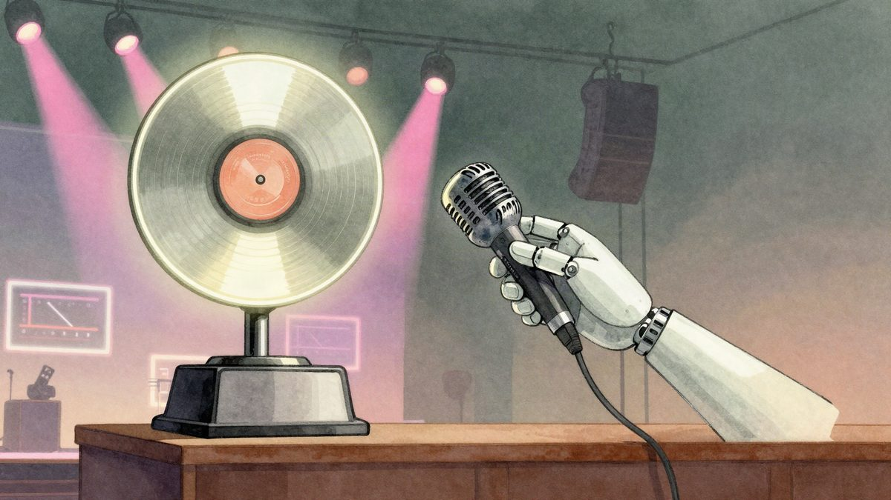

AI pjesma prvi put na vrhu Melon liste: MEOMURU nadmašio K-Pop grupe

Pjesma "Jesi li postao odrasla osoba iz snova" projekta MEOMURU došla je 13. studenoga na prvo mjesto korejske liste Melon TOP100. Prema izvoru, to je prva AI-potpomognuta pjesma na vrhu te liste. Napravljena je u servisu Suno i ima više od 22,9 milijuna slušanja.
Pjesma "Jesi li postao odrasla osoba iz snova?" AI glazbenog projekta MEOMURU je 13. studenoga popela na prvo mjesto Melon TOP100 liste, jedne od najvažnijih južnokorejskih streaming platformi. Prema izvoru, nijedna AI-potpomognuta pjesma prije nje nije osvojila vrh te liste.
Skladba je službeno objavljena u lipnju, a do prvog mjesta došla je nakon pet mjeseci. Ukupno ima više od 22,9 milijuna slušanja. Na vrhu se zadržala dulje vrijeme, ispred novih pjesama popularnih K-Pop djevojačkih grupa.
Rock balada o razočaranjima odrasle dobi
Riječ je o rock baladi. Tekst govori o teškoćama nakon odrastanja i o razlici između snova iz mladosti i života kakav je postao. Prema izvoru, najviše je sluša publika od 30 do 40 godina, koja čini više od polovice slušatelja. Mnogi su rođeni devedesetih i u tekstu te melodiji prepoznaju vlastito iskustvo.
Suno i ljudski tim
Pjesma je nastala u servisu Suno, američkoj platformi za generiranje glazbe. Tim skladatelja i producenata zadužen je za planiranje, pisanje teksta i nadzor cijelog procesa proizvodnje.
Suno radi tako da korisnik upiše temu ili motiv pjesme i zada upute poput "rock stil" ili "s tekstom". Servis zatim generira cijelu pjesmu s vokalom, dugu otprilike tri minute. Prema izvoru, to može i netko bez ikakvog iskustva u produkciji glazbe.
Izvor: MyDrivers (快科技)